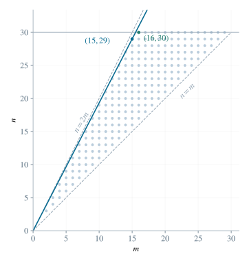

2.1 利用对称性与严格改进
记所求表达式为 T(m,n)。交换 m,n 不改变其值，故先设 m≤n。若 n>2m，将 n 替换为 n−m；新的两数仍为不超过 30 的正整数，且 n−m>m。因为减去整数不改变小数部分，而 m/n 与 m/(n−m) 均在 (0,1) 中，有：
{mn−m}{n−mm}={mn},=n−mm>nm={nm}. （1）所以 n>2m 时一定不是最大值点。反复做此操作，分母 n 严格下降，最终进入 m≤n≤2m。
2.2 处理边界并化成单变量函数
边界 n=m 时 T=0；n=2m 时 T=1/2。而可行点 (m,n)=(15,29) 给出的值大于 1，所以两个边界均不可能取最大值。以下只需考虑 m<n<2m。此时 0<m/n<1、1<n/m<2，故：
T(m,n)f(r)=nm+mn−1=f(mn),=r+r1−1(1<r<2). （2）2.3 证明函数严格递增
任取 1<r1<r2<2，直接计算差值，不需要使用微分：
f(r2)−f(r1)=(r2−r1)(1−r1r21)>0. （3）两个因子均为正，故 f 严格递增。问题等价于在 m<n<2m、n≤30 的整数点中，使 n/m 尽可能大。
2.4 按分母分成两种情形
若 1≤m≤15，由 n<2m 及整数性得 n≤2m−1，所以：
mn≤2−m1≤2−151=1529. （4）在有可行点的前提下，两处等号同时成立恰要求 m=15,n=29。若 m≥16，则使用上界 n≤30 得：
mn1529−815≤1630=815<1529,=1207>0. （5）
图 1. 约束 m<n<2m、n≤30 下的整数点。过 (15,29) 的射线斜率最大。
2.5 计算最大值与全部取等点
T(15,29)=2915+(1529−1)=435225+406=435631. （6）在 m≤n 的范围内取等点唯一为 (15,29)；恢复原问题的对称性，全部取等点为 (15,29) 和 (29,15)。前面被排除的 n>2m 情形具有严格改进，也不可能另有取等点。